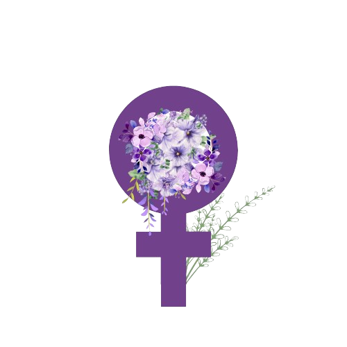
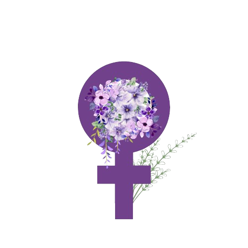

¿Quien era Juana de Vega ?
Juana María de la Vega, condesa de Espoz y Mina (La Coruña, 7 de marzo de 1805-22 de junio de 1872), fue una activista y escritora liberal española. Casada con el guerrillero y militar liberal Francisco Espoz y Mina, tras su muerte fue aya y camarera mayor de Isabel II durante la minoría de edad de la reina entre 1841 y 1843. Después volvió a La Coruña, donde residiría hasta su muerte y donde desplegó un intenso activismo político y social liberal, que compaginó con la escritura de dos obras de memorias, la última inacabada, en las que vindicó la figura de su esposo, convertido en un héroe de la Revolución liberal española. En la edición de 1910 de la obra en la que recoge su experiencia como aya y camarera mayor de Isabel II, publicada por el Congreso de los Diputados presidido por el liberal José Canalejas, se afirmó que era «una de las mujeres más ilustres de cuantas han enaltecido el nombre de España», y que su nombre debería figurar además en el panteón literario femenino junto con Gertrudis Gómez de Avellaneda, Cecilia Böhl de Faber, Carolina Coronado, Concepción Arenal y Rosalía de Castro.
Juana fue educada según los principios de la Ilustración que abogaban por sacar también a las mujeres de la ignorancia, por lo que se benefició de una instrucción en su propio hogar inusual para la época —cuando se decía que la mujer no debía saber ni aun escribir porque eso le podía conducir a su perdición— que estuvo a cargo de preceptores privados —uno de ellos al parecer le instruye en letras y humanidades— y de su propia madre que sentía pasión por la lectura. «Su más "precioso patrimonio", como la condesa reputaba su educación, había incluido saberes domésticos (bordado), habilidades ornamentales (música, baile, dibujo) y formación intelectual (gramática, aritmética, francés). Había recibido una instrucción pensada desde dentro de lo que el canon ilustrado fijaba para las jóvenes distinguidas. Es decir, era una educación útil que inculcaba los valores de la domesticidad y el trabajo (al fin y al cabo, el destino de toda mujer), de la distinción en la vida social y del cultivo del saber apropiado».